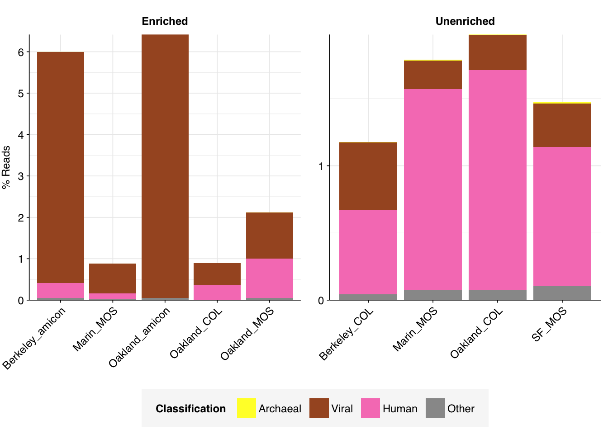

Successful modification of the pipeline to run using working and output directories on S3 rather than locally, and several other QOL improvements (e.g. implementation of a Nextflow config file).
Implementation of a “trial run” mode for the main workflow in which the raw read files are automatically subset prior to analysis to speed up testing.
Creation of a separate workflow for generating large index and reference files, so that these don’t need to be stored locally or generated during every run of the main workflow.
In order to validate pipeline performance on datasets other than our own BMC data, I’ve begun running it on pre-existing datasets from the P2RA project, starting with Crits-Christoph et al. (2021):
This was first and foremost a SARS-CoV-2 sequencing project that took place in the San Francisco Bay Area in 2020. Our data consists of 18 samples, all of which were collected as 24-hour composite samples of raw sewage collected from wastewater interceptor lines in four different locations (Berkeley, Oakland, San Francisco, and Marin).
Samples were concentrated using three different methods (Amicon ultrafiltration, silica columns, or milk of silica); see paper methods for more details.
Six samples (the “unenriched” fraction) underwent bacterial ribodepletion with RiboZero Plus, followed by untargeted metagenomic RNA-sequencing. The rest (the “enriched” fraction) underwent panel enrichment for respiratory viruses using the Illumina Respiratory Virus Oligo Panel, and no ribodepletion.
The raw data
The raw data obtained from SRA comprised 18 pairs of FASTQ files corresponding to 18 different samples. Unlike for the BMC data, there was no need to concatenate multiple FASTQ files for a given sample. What remained was roughly 298M read pairs of non-RVP-enriched data and 9M read pairs of RVP-enriched data, corresponding to roughly 45 Gb and 1 Gb of sequencing data, respectively. Reads were typically 70-80bp in length. Read qualities were high, adapter levels were relatively low, and FASTQC-measured duplication levels were moderate at 50-70%.
Both RVP-enriched and unenriched samples showed significant, but not overwhelming, reductions in read counts during preprocessing. In the case of unenriched samples, most reads were lost during the deduplication stage, with low losses observed at other stages. In enriched samples, a much larger fraction of reads were lost during the ribodepletion stages; this is consistent with all of the unenriched samples having undergone ribodepletion, while the unenriched samples did not.
On average, cleaning, deduplication and conservative ribodepletion together removed about 44% and 66% of total reads in unenriched and enriched samples, respectively. Host depletion, livestock depletion and secondary ribodepletion removed a further 2% and 5%, respectively.
Data cleaning with FASTP was very successful at removing adapters, with no adapter sequences found by FASTQC at any stage after the raw data. Preprocessing had little effect on sequence quality, but this is unsurprising since raw sequence quality was already high.
Deduplication and ribodepletion were collectively quite effective at reducing measured duplicate levels, with the former and latter respectively having the greatest effect in unenriched vs enriched samples. In both cases, the average detected duplication level after both processes was roughly 15%. Note that the pipeline still doesn’t have a reverse-complement-sensitive deduplication pipeline, so only same-orientation duplicates have been removed.
As before, to assess the high-level composition of the reads, I ran the ribodepleted files through Kraken (using the Standard 16 database) and summarized the results with Bracken. Combining these results with the read counts above gives us a breakdown of the inferred composition of the samples:
# Plot composition of minor componentsread_comp_minor<-read_comp_summ%>%filter(classification%in%c("Archaeal", "Viral", "Human", "Other"))palette_minor<-brewer.pal(9, "Set1")[6:9]g_comp_minor<-ggplot(read_comp_minor, aes(x=loc_met, y=p_reads, fill=classification))+geom_col(position ="stack")+scale_y_continuous(name ="% Reads", breaks =seq(0,0.1,0.01), expand =c(0,0), labels =function(x)x*100)+scale_fill_manual(values=palette_minor, name ="Classification")+facet_wrap(.~enrichment, scales="free")+theme_kitg_comp_minor

In the unenriched samples, about 80% of reads are low-quality, duplicates, ribosomal, or unassigned, leaving about 20% of other assignable reads. Of these, most (16-20%) were bacterial. The fraction of human reads ranged from 0.6 to 1.5%; that of livestock reads from 0.04 to 0.1%; and that of viral reads from 0.2 to 0.5% – about 2 orders of magnitude higher than observed in our BMC data.
As expected, the panel-enriched samples show significantly higher levels of viral reads than the unenriched samples, between 0.5 and 6.4% of all reads. Conversely, with the exception of one sample with 33% bacterial reads, most enriched samples showed much lower bacterial read abundance (0.8 to 4.4%). Human reads are also moderately reduced (0 to 1%), though not as dramatically as bacteria.
In my next entry, I’ll look into human-infecting virus reads in the Crits-Christoph data, and the changes I needed to make to the pipeline described above to make this analysis go well.
Source Code
---title: "Workflow analysis of Crits-Christoph et al. (2021), part 1"subtitle: "Preprocessing and composition."author: "Will Bradshaw"date: 2024-01-23format: html: code-fold: true code-tools: true code-link: true df-print: pagededitor: visualtitle-block-banner: black---```{r}#| label: load-packages#| include: falselibrary(tidyverse)library(cowplot)library(patchwork)library(fastqcr)library(RColorBrewer)source("../scripts/aux_plot-theme.R")theme_base <- theme_base +theme(aspect.ratio =NULL)theme_kit <- theme_base +theme(axis.text.x =element_text(hjust =1, angle =45),axis.title.x =element_blank(),)tnl <-theme(legend.position ="none")```Since my [last entry](https://data.securebio.org/wills-public-notebook/notebooks/2023-12-22_bmc-rna-sequel.html), I've continued to work on the [new Nextflow MGS pipeline](https://github.com/naobservatory/mgs-workflow). Changes since the last entry include:- Successful modification of the pipeline to run using working and output directories on S3 rather than locally, and several other QOL improvements (e.g. implementation of a Nextflow config file).- Various bug fixes.- Modification of the human-viral identification sub-pipeline to include [singly or discordantly aligned read pairs](https://bowtie-bio.sourceforge.net/bowtie2/manual.shtml#concordant-pairs-match-pair-expectations-discordant-pairs-dont).- Implementation of a "trial run" mode for the main workflow in which the raw read files are automatically subset prior to analysis to speed up testing.- Creation of a separate workflow for generating large index and reference files, so that these don't need to be stored locally or generated during every run of the main workflow.{fig-align="center"}In order to validate pipeline performance on datasets other than our own BMC data, I've begun running it on pre-existing datasets from the [P2RA project](https://naobservatory.org/reports/predicting-virus-relative-abundance-in-wastewater/), starting with [Crits-Christoph et al. (2021)](https://doi.org/10.1128%2FmBio.02703-20):- This was first and foremost a SARS-CoV-2 sequencing project that took place in the San Francisco Bay Area in 2020. Our data consists of 18 samples, all of which were collected as 24-hour composite samples of raw sewage collected from wastewater interceptor lines in four different locations (Berkeley, Oakland, San Francisco, and Marin).- Samples were concentrated using three different methods (Amicon ultrafiltration, silica columns, or milk of silica); see paper methods for more details.- Six samples (the "unenriched" fraction) underwent bacterial ribodepletion with RiboZero Plus, followed by untargeted metagenomic RNA-sequencing. The rest (the "enriched" fraction) underwent panel enrichment for respiratory viruses using the Illumina Respiratory Virus Oligo Panel, and no ribodepletion.# The raw dataThe raw data obtained from SRA comprised 18 pairs of FASTQ files corresponding to 18 different samples. Unlike for the BMC data, there was no need to concatenate multiple FASTQ files for a given sample. What remained was roughly 298M read pairs of non-RVP-enriched data and 9M read pairs of RVP-enriched data, corresponding to roughly 45 Gb and 1 Gb of sequencing data, respectively. Reads were typically 70-80bp in length. Read qualities were high, adapter levels were relatively low, and FASTQC-measured duplication levels were moderate at 50-70%.```{r}#| fig-height: 5# Data input pathsdata_dir <-"../data/2024-02-04_crits-christoph-1/"libraries_path <-file.path(data_dir, "cc-libraries.txt")basic_stats_path <-file.path(data_dir, "qc_basic_stats.tsv")adapter_stats_path <-file.path(data_dir, "qc_adapter_stats.tsv")quality_base_stats_path <-file.path(data_dir, "qc_quality_base_stats.tsv")quality_seq_stats_path <-file.path(data_dir, "qc_quality_sequence_stats.tsv")# Import datastages <-c("raw_concat", "cleaned", "dedup", "ribo_initial", "remove_human", "remove_other", "ribo_secondary")libraries <-read_tsv(libraries_path, show_col_types =FALSE) %>%mutate(enrichment =str_to_title(enrichment))basic_stats <-read_tsv(basic_stats_path, show_col_types =FALSE) %>%inner_join(libraries, by="sample") %>%arrange(enrichment, location, collection_date) %>%mutate(stage =factor(stage, levels = stages),sample =fct_inorder(sample))adapter_stats <-read_tsv(adapter_stats_path, show_col_types =FALSE) %>%inner_join(libraries, by="sample") %>%mutate(stage =factor(stage, levels = stages), read_pair =fct_inorder(as.character(read_pair)))quality_base_stats <-read_tsv(quality_base_stats_path, show_col_types =FALSE) %>%inner_join(libraries, by="sample") %>%mutate(stage =factor(stage, levels = stages), read_pair =fct_inorder(as.character(read_pair)))quality_seq_stats <-read_tsv(quality_seq_stats_path, show_col_types =FALSE) %>%inner_join(libraries, by="sample") %>%mutate(stage =factor(stage, levels = stages), read_pair =fct_inorder(as.character(read_pair)))# Filter to raw databasic_stats_raw <- basic_stats %>%filter(stage =="raw_concat")adapter_stats_raw <- adapter_stats %>%filter(stage =="raw_concat")quality_base_stats_raw <- quality_base_stats %>%filter(stage =="raw_concat")quality_seq_stats_raw <- quality_seq_stats %>%filter(stage =="raw_concat")# Visualize basic statsg_nreads_raw <-ggplot(basic_stats_raw, aes(x=enrichment, y=n_read_pairs, fill=location, group=sample)) +geom_col(position="dodge") +scale_y_continuous(name="# Read pairs", expand=c(0,0)) +scale_fill_brewer(palette="Dark2", name="Location") + theme_kitlegend_location <-get_legend(g_nreads_raw)g_nreads_raw_2 <- g_nreads_raw +theme(legend.position ="none")g_nbases_raw <-ggplot(basic_stats_raw, aes(x=enrichment, y=n_bases_approx, fill=location, group=sample)) +geom_col(position="dodge") +scale_y_continuous(name="Total base pairs (approx)", expand=c(0,0)) +scale_fill_brewer(palette="Dark2", name="Location") + theme_kit +theme(legend.position ="none")g_ndup_raw <-ggplot(basic_stats_raw, aes(x=enrichment, y=percent_duplicates, fill=location, group=sample)) +geom_col(position="dodge") +scale_y_continuous(name="% Duplicates (FASTQC)", expand=c(0,0), limits =c(0,100), breaks =seq(0,100,20)) +scale_fill_brewer(palette="Dark2", name="Location") + theme_kit +theme(legend.position ="none")g_basic_raw <-plot_grid(g_nreads_raw_2 + g_nbases_raw + g_ndup_raw, legend_location, ncol =1, rel_heights =c(1,0.1))g_basic_raw# Visualize adaptersg_adapters_raw <-ggplot(adapter_stats_raw, aes(x=position, y=pc_adapters, color=location, linetype = read_pair, group=interaction(sample, read_pair))) +geom_line() +scale_color_brewer(palette ="Dark2", name ="Location") +scale_linetype_discrete(name ="Read Pair") +scale_y_continuous(name="% Adapters", limits=c(0,50),breaks =seq(0,50,10), expand=c(0,0)) +scale_x_continuous(name="Position", limits=c(0,80),breaks=seq(0,80,20), expand=c(0,0)) +guides(color=guide_legend(nrow=2,byrow=TRUE),linetype =guide_legend(nrow=2,byrow=TRUE)) +facet_wrap(~adapter) + theme_baseg_adapters_raw# Visualize qualityg_quality_base_raw <-ggplot(quality_base_stats_raw, aes(x=position, y=mean_phred_score, color=location, linetype = read_pair, group=interaction(sample,read_pair))) +geom_hline(yintercept=25, linetype="dashed", color="red") +geom_hline(yintercept=30, linetype="dashed", color="red") +geom_line() +scale_color_brewer(palette ="Dark2", name ="Location") +scale_linetype_discrete(name ="Read Pair") +scale_y_continuous(name="Mean Phred score", expand=c(0,0), limits=c(20,45)) +scale_x_continuous(name="Position", limits=c(0,80),breaks=seq(0,80,20), expand=c(0,0)) +guides(color=guide_legend(nrow=2,byrow=TRUE),linetype =guide_legend(nrow=2,byrow=TRUE)) + theme_baseg_quality_seq_raw <-ggplot(quality_seq_stats_raw, aes(x=mean_phred_score, y=n_sequences, color=location, linetype = read_pair, group=interaction(sample,read_pair))) +geom_vline(xintercept=25, linetype="dashed", color="red") +geom_vline(xintercept=30, linetype="dashed", color="red") +geom_line() +scale_color_brewer(palette ="Dark2", name ="Location") +scale_linetype_discrete(name ="Read Pair") +scale_x_continuous(name="Mean Phred score", expand=c(0,0)) +scale_y_continuous(name="# Sequences", expand=c(0,0)) +guides(color=guide_legend(nrow=2,byrow=TRUE),linetype =guide_legend(nrow=2,byrow=TRUE)) + theme_baseg_quality_base_rawg_quality_seq_raw```# PreprocessingBoth RVP-enriched and unenriched samples showed significant, but not overwhelming, reductions in read counts during preprocessing. In the case of unenriched samples, most reads were lost during the deduplication stage, with low losses observed at other stages. In enriched samples, a much larger fraction of reads were lost during the ribodepletion stages; this is consistent with all of the unenriched samples having undergone ribodepletion, while the unenriched samples did not.On average, cleaning, deduplication and conservative ribodepletion together removed about 44% and 66% of total reads in unenriched and enriched samples, respectively. Host depletion, livestock depletion and secondary ribodepletion removed a further 2% and 5%, respectively.```{r}#| warning: false# Plot reads over preprocessingg_reads_stages <-ggplot(basic_stats, aes(x=stage, y=n_read_pairs,fill=location,group=sample)) +geom_col(position="dodge") +scale_fill_brewer(palette="Dark2", name="Location") +scale_y_continuous("# Read pairs", expand=c(0,0)) +facet_wrap(.~enrichment, scales ="free_y") + theme_kitg_reads_stages# Plot relative read losses during preprocessingn_reads_rel <- basic_stats %>%select(sample, location, stage, enrichment, n_read_pairs) %>%group_by(sample, location, enrichment) %>%arrange(sample, location, enrichment, stage) %>%mutate(p_reads_retained = n_read_pairs /lag(n_read_pairs),p_reads_lost =1- p_reads_retained,p_reads_retained_abs = n_read_pairs / n_read_pairs[1],p_reads_lost_abs =1-p_reads_retained_abs)g_reads_rel <-ggplot(n_reads_rel, aes(x=stage, y=p_reads_lost,fill=location,group=sample)) +geom_col(position="dodge") +scale_fill_brewer(palette="Dark2", name="Location") +scale_y_continuous("% Reads Lost", expand=c(0,0), labels =function(x) x*100) +facet_wrap(.~enrichment, scales ="free_y") + theme_kitg_reads_rel# Plot bases over preprocessingg_bases_stages <-ggplot(basic_stats, aes(x=stage, y=n_bases_approx,fill=location,group=sample)) +geom_col(position="dodge") +scale_fill_brewer(palette="Dark2", name="Enrichment") +scale_y_continuous("# Bases (approx)", expand=c(0,0)) +facet_wrap(.~enrichment, scales ="free_y") + theme_kitg_bases_stages```Data cleaning with FASTP was very successful at removing adapters, with no adapter sequences found by FASTQC at any stage after the raw data. Preprocessing had little effect on sequence quality, but this is unsurprising since raw sequence quality was already high.Deduplication and ribodepletion were collectively quite effective at reducing measured duplicate levels, with the former and latter respectively having the greatest effect in unenriched vs enriched samples. In both cases, the average detected duplication level after both processes was roughly 15%. **Note that the pipeline still doesn't have a reverse-complement-sensitive deduplication pipeline, so only same-orientation duplicates have been removed.**```{r}g_dup_stages <-ggplot(basic_stats, aes(x=stage, y=percent_duplicates, fill=location, group=sample)) +geom_col(position="dodge") +scale_fill_brewer(palette ="Dark2", name="Location") +scale_y_continuous("% Duplicates", limits=c(0,100), breaks=seq(0,100,20), expand=c(0,0)) +facet_wrap(.~enrichment, scales ="free_y") + theme_kitg_readlen_stages <-ggplot(basic_stats, aes(x=stage, y=mean_seq_len, fill=location, group=sample)) +geom_col(position="dodge") +scale_fill_brewer(palette ="Dark2", name="Location") +scale_y_continuous("Mean read length (nt)", expand=c(0,0)) +facet_wrap(.~enrichment, scales ="free_y") + theme_kitlegend_loc <-get_legend(g_dup_stages)g_dup_stagesg_readlen_stages```# High-level compositionAs before, to assess the high-level composition of the reads, I ran the ribodepleted files through Kraken (using the Standard 16 database) and summarized the results with Bracken. Combining these results with the read counts above gives us a breakdown of the inferred composition of the samples:```{r}# Import Bracken databracken_path <-file.path(data_dir, "bracken_counts.tsv")bracken <-read_tsv(bracken_path, show_col_types =FALSE)total_assigned <- bracken %>%group_by(sample) %>%summarize(name ="Total",kraken_assigned_reads =sum(kraken_assigned_reads),added_reads =sum(added_reads),new_est_reads =sum(new_est_reads),fraction_total_reads =sum(fraction_total_reads))bracken_spread <- bracken %>%select(name, sample, new_est_reads) %>%mutate(name =tolower(name)) %>%pivot_wider(id_cols ="sample", names_from ="name", values_from ="new_est_reads")# Count readsread_counts_preproc <- basic_stats %>%select(sample, location, method, enrichment, stage, n_read_pairs) %>%pivot_wider(id_cols =c("sample", "location", "method", "enrichment"), names_from="stage", values_from="n_read_pairs")read_counts <- read_counts_preproc %>%inner_join(total_assigned %>%select(sample, new_est_reads), by ="sample") %>%rename(assigned = new_est_reads) %>%inner_join(bracken_spread, by="sample")# Assess compositionread_comp <-transmute(read_counts, sample=sample, location=location, method=method,enrichment=enrichment,n_filtered = raw_concat-cleaned,n_duplicate = cleaned-dedup,n_ribosomal = (dedup-ribo_initial) + (remove_other-ribo_secondary),n_unassigned = ribo_secondary-assigned,n_bacterial = bacteria,n_archaeal = archaea,n_viral = viruses,n_human = (ribo_initial-remove_human) + eukaryota,n_other = remove_human-remove_other)read_comp_long <-pivot_longer(read_comp, -(sample:enrichment), names_to ="classification",names_prefix ="n_", values_to ="n_reads") %>%mutate(classification =fct_inorder(str_to_sentence(classification))) %>%group_by(sample) %>%mutate(p_reads = n_reads/sum(n_reads)) %>%mutate(loc_met =paste(location,method,sep="_"))read_comp_summ <- read_comp_long %>%group_by(loc_met, enrichment, classification) %>%summarize(n_reads =sum(n_reads), .groups ="drop_last") %>%mutate(n_reads =replace_na(n_reads,0),p_reads = n_reads/sum(n_reads),pc_reads = p_reads*100)# Plot overall compositiong_comp <-ggplot(read_comp_summ, aes(x=loc_met, y=p_reads, fill=classification)) +geom_col(position ="stack") +scale_y_continuous(name ="% Reads", limits =c(0,1.01), breaks =seq(0,1,0.2),expand =c(0,0), labels =function(x) x*100) +scale_fill_brewer(palette ="Set1", name ="Classification") +facet_wrap(.~enrichment, scales="free") + theme_kitg_comp# Plot composition of minor componentsread_comp_minor <- read_comp_summ %>%filter(classification %in%c("Archaeal", "Viral", "Human", "Other"))palette_minor <-brewer.pal(9, "Set1")[6:9]g_comp_minor <-ggplot(read_comp_minor, aes(x=loc_met, y=p_reads, fill=classification)) +geom_col(position ="stack") +scale_y_continuous(name ="% Reads", breaks =seq(0,0.1,0.01),expand =c(0,0), labels =function(x) x*100) +scale_fill_manual(values=palette_minor, name ="Classification") +facet_wrap(.~enrichment, scales="free") + theme_kitg_comp_minor```In the unenriched samples, about 80% of reads are low-quality, duplicates, ribosomal, or unassigned, leaving about 20% of other assignable reads. Of these, most (16-20%) were bacterial. The fraction of human reads ranged from 0.6 to 1.5%; that of livestock reads from 0.04 to 0.1%; and that of viral reads from 0.2 to 0.5% – about 2 orders of magnitude higher than observed in our BMC data.As expected, the panel-enriched samples show significantly higher levels of viral reads than the unenriched samples, between 0.5 and 6.4% of all reads. Conversely, with the exception of one sample with 33% bacterial reads, most enriched samples showed much lower bacterial read abundance (0.8 to 4.4%). Human reads are also moderately reduced (0 to 1%), though not as dramatically as bacteria.In my next entry, I'll look into human-infecting virus reads in the Crits-Christoph data, and the changes I needed to make to the pipeline described above to make this analysis go well.